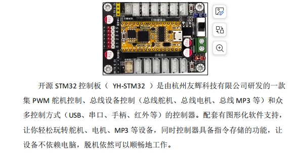
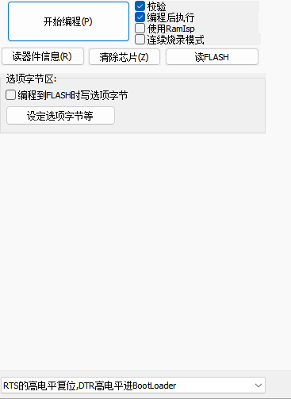

发布时间： · 博客园原文
常用指令表
1.#000P1500T1000!
解析：“#”和“!”是固定英文格式。
000 代表 ID编号（范围 000-254），必须为 3 位，不足补 0。比如 3 号舵机为“003”而不能为“3”。
1500 代表 PWM 脉冲宽度调制（P）（范围 0500-2500），必须为 4 位，不足补 0。比如 PWM 为 800，则必须为“P0800”。
1000代表 TIME 时间(T)（范围 0000-9999），同样必须为 4 位，不足补 0，单位 ms。比如 TIME 为 500，则必须为“T0500” 。
多个舵机控制指令：{#000P1602T1000!#001P2500T0000!#002P1500T1000!}
该指令可以叠加同时控制多个舵机。多个指令同时使用时（2 个或 2 个以上叠加）需要在整条指令前后加“{}”。
使用场景1：控制一个270度总线舵机，ID号为003。初始中间位置指令为#003P1500T1000!
如果我想要它逆时针最快转动135°，发指令#003P2500T0000!
然后，再顺时针最慢转动270°，发指令#003P0500T9999!
解析：P后面的0500-2500的范围值代表270度角度范围。T后面0000-9999代表的是时间，单位ms毫秒，舵机轴朝着自己，1500-2500方向为逆时针转动1500-0500为顺时针转动。
使用场景2：控制两个270度总线舵机，ID号分别为001和003。初始中间位置指令为{#001P1500T1000!#003P1500T1000!}
如果我想要001号它逆时针用1000ms时间转动67.5°，003号顺时针用2000ms的时间转动90°，发指令{#001P2000T1000!#003P0833T2000!}
解析：#001P2000T1000!其中P后面2000为1500-2500的中间值，也就是135度的一半为67.5°。003号舵机转动90°，是1500-0500之间有1000数值代表135°。那么90°为
1500-（（90/135）*1000）≈833。
2.#000PID!
解析：指定 ID 检测，该指令时读取 000 的 ID，检测当前舵机是否为 000 这个 ID 号，是返回#000P! #OK!。否则无返回。
如果不知道舵机ID号是多少，推荐用广播模式#255PID!读取
3. #000PID001!
解析：指定修改 ID，该指令是把 000 号 ID 改为 001 号，修改成功后返回#001P!。不成功无返回。
如果不知道舵机ID，就用255修改，比如广播模式#255PID001!修改，返回#001P!
4.#000PCSD!
解析：设置舵机启动位置为当前舵机角度，默认设置为1500，开机自启动范围为 0500~2500，成功返回 #OK!
5. #000PMOD! （如果不知道舵机ID，可以用广播模式#255PMOD!读取）
解析：读取舵机当前的工作模式，返回如下：
#000PMOD1! ：舵机模式，角度最大范围 270 度，方向顺时针
#000PMOD2! ：舵机模式，角度最大范围 270 度，方向逆时针
#000PMOD3! ：舵机模式，角度最大范围 180 度，方向顺时针
#000PMOD4! ：舵机模式，角度最大范围 180 度，方向逆时针
#000PMOD5! ：马达模式，角度 360 度，定圈旋转，方向顺时针
#000PMOD6! ：马达模式，角度 360 度，定圈旋转，方向逆时针
#000PMOD7! ：马达模式，角度 360 度，定时旋转，方向顺时针
#000PMOD8! ：马达模式，角度 360 度，定时旋转，方向逆时针
6. #000PBD1!
解析：设置舵机通信波特率，默认 115200。数字参数对应关系为：1-9600，2-19200，3-38400， 4-57600，5-115200，6-128000，7-256000，8-1000000，该指令设置成功后返回#OK9600!
控制板示例程序
/**********************************************
* @总线设备基本控制指令表：
* 1. #000PID! //读取ID指令
* 2. #000PID001! //设置ID指令
* 3. #000PVER! //读取版本
* 4. #000PBD1! //设置波特率 默认115200 1:9600 , 2:19200 , 3:38400 , 4:57600 , 5:115200 , 6:128000 7:256000 8:1000000
* 5. #000PCLE! //恢复出厂设置包括ID
* @总线马达ZMotor控制指令表：
* 1. #000P1500T1000! //电机速度控制
**********************************************/
uart3_send_str((u8 *)"#255PID001!");
delay_ms(500);
uart3_send_str((u8 *)"#001PID!");
delay_ms(500);
uart3_send_str((u8 *)"#001P2500T3000!");
delay_ms(5000);
uart3_send_str((u8 *)"#001P0500T3000!");
delay_ms(5000);
uart3_send_str((u8 *)"#001P1500T1000!");
/***********************************************
函数名称: uart3_send_str()
功能介绍: 串口3发送字符串
函数参数: *s 发送的字符串
返回值: 无
***********************************************/
void uart3_send_str(u8 *s)
{
USART_ITConfig(USART3, USART_IT_RXNE, DISABLE);
while (*s)
{
uart3_send_byte(*s++);
}
USART_ITConfig(USART3, USART_IT_RXNE, ENABLE);
}
/***********************************************
函数名称: uart3_send_byte()
功能介绍: 串口3发送字节
函数参数: dat 发送的字节
返回值: 无
***********************************************/
void uart3_send_byte(u8 dat)
{
USART_SendData(USART3, dat);
while(USART_GetFlagStatus(USART3, USART_FLAG_TXE) == RESET);
return;
}
封装命令的函数
/**
* @函数描述: 设置舵机ID
* @param broadcast_id: 广播ID(255)或现有舵机ID
* @param new_id: 要设置的新ID(0-254)
* @return {*}
* @指令格式: #255PID001!
*/
void servo_set_id(u8 broadcast_id, u8 new_id)
{
u8 cmd[16];
sprintf((char *)cmd, "#%03dPID%03d!", broadcast_id, new_id);
uart3_send_str(cmd);
}
/**
* @函数描述: 控制舵机转动到指定位置
* @param id: 舵机ID(0-254)
* @param position: PWM脉宽值(500-2500)，对应0°-270°，1500为中间135°
* @param time_ms: 执行时间(0-9999ms)
* @return {*}
* @指令格式: #001P1500T1000!
*/
void servo_move(u8 id, u16 position, u16 time_ms)
{
u8 cmd[16];
sprintf((char *)cmd, "#%03dP%04dT%04d!", id, position, time_ms);
uart3_send_str(cmd);
}
/**
* @函数描述: 控制舵机转动到指定角度（更友好的接口）
* @param id: 舵机ID(0-254)
* @param angle: 角度(0.0-270.0)，0°为顺时针极限，135°为中间位，270°为逆时针极限
* @param time_ms: 执行时间(0-9999ms)
* @return {*}
* @换算公式: P值 = (角度 / 270) * 2000 + 500
*/
void servo_move_angle(u8 id, float angle, u16 time_ms)
{
u16 position = (u16)((angle / 270.0f) * 2000.0f + 500.0f);
if (position < 500) position = 500;
if (position > 2500) position = 2500;
servo_move(id, position, time_ms);
}
/**
* @函数描述: 设置舵机初始化转动到的角度
* @param id: 舵机ID(0-254)
* @param angle: 角度(0.0-270.0)，0°为顺时针极限，135°为中间位，270°为逆时针极限
* @return {*}
* @换算公式: P值 = (角度 / 270) * 2000 + 500
*/
void servo_set_initial_angle(u8 id, float angle)
{
u16 position;
u8 cmd[16];
position = (u16)((angle / 270.0f) * 2000.0f + 500.0f);
if (position < 500) position = 500;
if (position > 2500) position = 2500;
servo_move_angle(id, angle, 1000.f);
delay_ms(500);
// 将舵机当前角度设置为上电自复位角度值
sprintf((char *)cmd, "#%03dPCSD!", id);
uart3_send_str(cmd);
}
/**
* @函数描述: 读取舵机ID
* @param id: 舵机ID(0-254)或255广播
* @return {*}
* @指令格式: #000PID!
*/
void servo_read_id(u8 id)
{
u8 cmd[8];
sprintf((char *)cmd, "#%03dPID!", id);
uart3_send_str(cmd);
}
YH-K32控制板
板载资源

FlyMCU烧写程序配置
